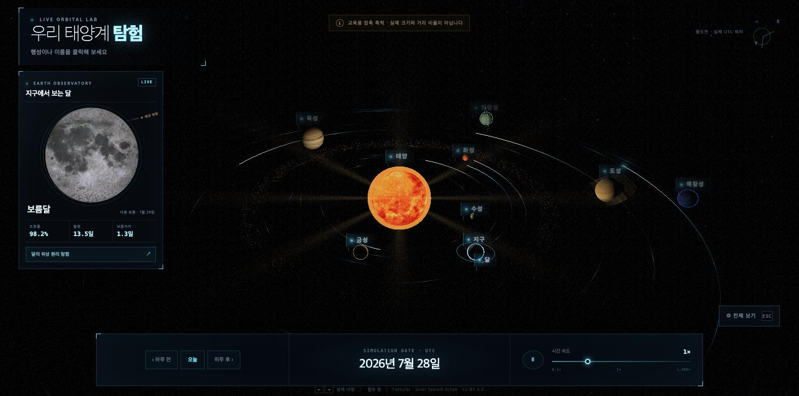

코딩 에이전트 벤치마크 — Space3D 태양계 시뮬레이터
동일한 스펙 하나를 4개 모델 · 5회 실행에 시켜 만들게 하고 시간 · 토큰 · 버그 · 품질을 계측한 기록
gpt-5.6-sol 과 claude-fable-5, 둘만 실제로 동작한다. 다섯 실행 전부가 자동 검증 10/10 만점을 받았지만 브라우저에서 열어보면 2승 3패다. 역법 정확도는 다섯 구현이 완전히 동일했다 — 행성 황경 상호 편차 0.0000°, 삭망월 오차 4.4~4.6분. 가장 어려워 보였던 기술 요소에는 변별력이 없었고, 순위는 전부 렌더링 품질에서 갈렸다.
배포된 결과물
| 모델 | URL | 상태 |
|---|---|---|
gpt-5.6-sol | https://space3d-sol.vercel.app | 정상 |
claude-fable-5 | https://space3d-fable5.vercel.app | 정상 |
claude-opus-5 · 1회차 | https://space3d-opus5.vercel.app | 창 높이에 따라 3D 씬 소실 |
claude-opus-5 · 2회차 | https://space3d-opus5-run2.vercel.app | 태양 블룸 폭주 |
grok-4.5 | https://space3d-grok45.vercel.app | 렌즈플레어 고스트 |
종합
| 모델 | 시간 | 시도 | 턴 | 비캐시 토큰 | 총 토큰 | 비용(API 환산) | 자동검증 | 시각검증 | 코드 |
|---|---|---|---|---|---|---|---|---|---|
grok-4.5 | 10.3분 | 1 | 17 | 131,492 | 1,039,396 | $0.73 | 10/10 | 파손 | 5,078줄 |
gpt-5.6-sol | 26.8분 | 1 | N/A | 256,181 | 4,554,421 | $5.00 | 10/10 | 정상 | 4,173줄 |
claude-fable-5 | 32.9분 | 1 | 82 | 301,485 | 7,531,034 | $17.18 | 10/10 | 정상 | 4,416줄 |
claude-opus-5 · claude-opus5-high-run2 | 35.7분 | 1 | 55 | 366,268 | 6,839,478 | $9.56 | 10/10 | 파손 | 7,578줄 |
claude-opus-5 · claude-opus5-high | 120.0분 | 2 | 153 | 611,136 | 32,150,726 | $25.52 | 10/10 | 파손 | 8,293줄 |
소요 시간
순차 실행이라 CPU·대역폭 경합은 없다. opus-5 1회차의 120분은 소요 시간이 아니다 — 두 시도 모두 60분 타임아웃에 걸린 합계이고, 1차는 Anthropic API 장애(HTTP 529 6회 · 재시도 8회)로 통째로 날아갔다. API 회복 후 같은 모델을 새 워크스페이스에서 다시 돌린 2회차는 35.7분에 타임아웃 없이 정상 종료했다. opus 5의 실제 소요 시간은 2회차로 읽어야 한다. 나머지 셋(codex · grok · fable)은 모두 1회 시도로 스스로 종료했다.
토큰 — 캐시와 비캐시
총 토큰은 캐시 읽기가 지배하고, 캐시 읽기는 턴 수에 비례할 뿐 작업량과 무관하다. opus-5 1회차는 총 32.15M 중 98.1%가 캐시 읽기였다 — 총계로는 grok의 31배지만 비캐시 기준으로는 4.6배다. 어느 쪽을 보느냐로 결론이 7배 달라지므로, 비교에는 비캐시 합을 쓴다.
비캐시 (신규 입력 + 캐시 쓰기 + 출력) 캐시 읽기
비캐시 = 신규 입력 + 캐시 쓰기 + 출력. 모델이 실제로 새로 처리한 양이다. 비율이 낮을수록 같은 문맥을 여러 턴에 걸쳐 반복해 읽었다는 뜻이다. CLI마다 input_tokens 정의가 달라(codex 는 캐시 포함, claude·grok 은 제외) 생성기가 정규화했다.
전체 내역
| 모델 | 신규 입력 | 캐시 쓰기 | 출력 | 비캐시 합 | 캐시 읽기 | 총계 | 비캐시% |
|---|---|---|---|---|---|---|---|
grok-4.5 | 82,465 | 0 | 49,027 | 131,492 | 907,904 | 1,039,396 | 12.7% |
gpt-5.6-sol | 193,393 | 0 | 62,788 | 256,181 | 4,298,240 | 4,554,421 | 5.6% |
claude-fable-5 | 110 | 170,675 | 130,700 | 301,485 | 7,229,549 | 7,531,034 | 4.0% |
claude-opus-5 · claude-opus5-high-run2 | 102 | 188,865 | 177,301 | 366,268 | 6,473,210 | 6,839,478 | 5.4% |
claude-opus-5 · claude-opus5-high | 280 | 368,182 | 242,674 | 611,136 | 31,539,590 | 32,150,726 | 1.9% |
생성 효율
| 모델 | 출력 토큰 | 산출 코드 | 출력/줄 | 턴 |
|---|---|---|---|---|
grok-4.5 | 49,027 | 5,078줄 | 9.7 | 17 |
gpt-5.6-sol | 62,788 | 4,173줄 | 15.0 | N/A |
claude-opus-5 · claude-opus5-high-run2 | 177,301 | 7,578줄 | 23.4 | 55 |
claude-opus-5 · claude-opus5-high | 242,674 | 8,293줄 | 29.3 | 153 |
claude-fable-5 | 130,700 | 4,416줄 | 29.6 | 82 |
역법 정확도 — 다섯 구현이 동일했다
가장 어려운 기술 요소였는데 변별력이 전혀 없었다. 다섯 ephemeris.js 를 직접 import 해 수치를 교차 비교했다.
| 측정 | 결과 |
|---|---|
| 행성 일심황경 상호 편차 (수성·지구·목성·해왕성, 2000~2030, 30일 간격) | 0.0000° — 다섯 전원 |
| 삭망월 (망 통과 시각 이분법, 122회 측정, 이론 29.530589일) | 오차 4.44 ~ 4.56분 — 다섯 전원 |
| 달 황경 상호 편차 (2000~2010, 3653일) | 최대 0.14° — 스펙 요구 0.5° 이내 |
다섯 모두 JPL J2000 궤도요소를 정확히 구현했다. 달 계산은 opus·grok·fable 이 Meeus Ch.47 완전 급수(89~120항), sol 이 Schlyter 계열 축약(12항)을 썼지만 교육용 정밀도에서는 차이가 드러나지 않았다. opus 만 세차 보정(precessionInLongitude)으로 J2000 좌표계에 맞췄고 나머지는 그날의 평균분점 기준이다 — 둘 다 타당한 관례이며, 10년 구간 0.14° 차이의 원인이다.
시각 검증 — 정상 2개
다섯 산출물의 dist 빌드를 각각 정적 서버로 띄우고 동일한 뷰포트에서 브라우저로 열었다.
정상 — gpt-5.6-sol · claude-fable-5

gpt-5.6-sol — 달 인셋 패널에 ‘태양 방향’ 화살표 주석까지 있다. 스펙의 “왜 그 위상으로 보이는지”를 가장 직접적으로 만족시킨 구현. 테스트한 두 뷰포트 모두 정상.

claude-fable-5 — 다섯 중 화면 완성도가 가장 높다. 코로나 글로우, 흐르는 궤도광, 소행성대, 대기 산란이 모두 살아 있으면서 과하지 않다. 두 뷰포트 모두 정상.
시각 검증 — 파손 3개
파손 — claude-opus-5 (두 실행 모두)

1회차 · 1456×816 — 라벨과 UI 는 그리는데 태양·행성·궤도가 전부 사라진다. 콘솔 에러도 없다. 같은 빌드가 1440×980 에서는 완벽하게 렌더링된다 — 뷰포트 의존 결함이다. 스펙 68행 “모바일에서도 최소한 안 깨지게” 위반.

2회차 — 이번엔 태양 블룸이 화면 전체를 덮는다. 1회차와 달리 두 뷰포트 모두에서 동일하게 깨진다. 같은 모델이 두 번 다른 방식으로 후처리에서 실패했다.
파손 — grok-4.5

스펙이 문자 그대로 경고한 실패 모드에 그대로 빠졌다. 스펙 55·58행: “fract 래핑 금지 — 화면 밖 소스는 클램프로 버릴 것, 안 그러면 화면 전체에 고스트 타일링됨”, “threshold 를 너무 낮추면 궤도 빛 펄스가 전부 고스트로 번져 사이키델릭해짐”. 무지개색 고스트가 화면을 덮어 태양계가 거의 보이지 않는다. 18초 후에도 그대로다.
추가로 grok 은 달 패널이 보름달 / 조명률 99.2% 라고 표시하면서 달을 거의 검은 원으로 그린다. 99.2% 조명이면 꽉 찬 밝은 원이어야 한다 — 핵심 교육 기능이 정확히 반대로 동작한다.
자동 검증이 놓친 것
| 체크 | 결과 | 실제 |
|---|---|---|
npm run build | 5/5 통과 | 진짜 통과 |
npm run selftest (역법) | 5/5 통과 | 진짜 통과 — 위 §역법 참조 |
dist/ 생성 | 5/5 통과 | 진짜 통과 |
| preview 200 응답 | 5/5 통과 | 진짜 통과 |
| 실제로 보이는가 | — | 2승 3패 · 자동 검증 불가 |
WebGL 렌더 결과는 픽셀을 봐야만 알 수 있다. 이 과제에서 순위를 결정한 결함은 전부 자동 검증의 사각지대에 있었다. UI·그래픽 과제에서 시각 검증을 생략하면 벤치마크가 성립하지 않는다.
흥미로운 대비: opus-5 1회차는 스스로 브라우저를 띄워 17장을 촬영하고 후처리 on/off ablation 까지 돌린 유일한 실행이었다(.smoke/ 에 보존). 그런데도 결함을 놓쳤다 — 자기가 쓴 창 크기 하나에서만 봤기 때문이다.
품질 심사
벤더를 모르는 블라인드 라벨로 코드를 읽고 채점한 뒤 공개했다. 정확성·견고성은 스크린샷이라는 객관 증거에 근거하고, 코드 품질·완성도는 주관이다. opus 두 실행은 같은 모델이므로 같은 색으로 표시했다.
claude-fable-5 gpt-5.6-sol claude-opus-5 · claude-opus5-high-run2 claude-opus-5 · claude-opus5-high grok-4.5 · 각 축 10점 만점
| 축 | claude-fable-5 | gpt-5.6-sol | claude-opus-5 · claude-opus5-high-run2 | claude-opus-5 · claude-opus5-high | grok-4.5 |
|---|---|---|---|---|---|
| 요구사항 충족도 | 9 | 9 | 9 | 9 | 8 |
| 정확성 | 9 | 9 | 5 | 5 | 4 |
| 견고성 | 9 | 9 | 5 | 4 | 5 |
| 코드 품질 | 9 | 8 | 9 | 9 | 8 |
| 완성도 | 8 | 8 | 8 | 9 | 6 |
| 합계 | 44/50 | 43/50 | 36/50 | 36/50 | 31/50 |
claude-fable-5 — 44/50
- 장점 — 다섯 중 화면 완성도가 가장 높으면서 동시에 정상 동작한다. 1회 시도 32.9분, 타임아웃 없이 자체 종료. 전용 렌즈플레어 패스를 실제 렌더 타깃으로 나눠 구현했고(
src/scene.js:127),src/moonview.js:16은 메인 씬 축소가 아니라 고정 달 표면 + 이동 광원으로 전용 관측 뷰를 만든다. - 단점 — 자체 시각 검증 흔적이 없다. 코드량(4,416줄)은 중간이고 opus 만큼 모듈이 세분화되어 있지는 않다.
gpt-5.6-sol — 43/50
- 장점 — 두 뷰포트 모두 정상. 달 패널의 ‘태양 방향’ 주석은 스펙 의도를 가장 잘 읽은 부분이다. 4,173줄로 가장 간결하면서 기능은 다 들어있고, 비용도 가장 낮은 축(~$5.00).
- 단점 —
style.css가 1,270줄로 전체의 30%. 역법이 12항 축약이라 장기 정밀도는 다섯 중 가장 낮다(교육용으론 무관). 자체 검증 흔적 없음.
claude-opus-5 · claude-opus5-high-run2 — 36/50
- 장점 — 코드 구조가 가장 좋다. 7,578줄에 후처리 전용 모듈 분리, 상세한 selftest. 정상 상태에서 35.7분 1회 시도로 완주해 1회차의 120분이 인프라 장애였음을 확정했다.
- 단점 — 태양 블룸이 화면을 덮어 두 뷰포트 모두에서 사용 불가. 스펙이 요구한 “태양 코어만 추출” 을 지키지 못했다. 토큰·비용도 상위권.
claude-opus-5 · claude-opus5-high — 36/50
- 장점 — 8,293줄로 가장 많고 구조도 가장 낫다(
src/effects/분리,textures.js폴백 전용 모듈, 364줄 selftest, 세차 보정). 다섯 중 유일하게 스스로 브라우저를 띄워 17장을 촬영하고 ablation 테스트까지 돌렸다. - 단점 — 뷰포트 의존으로 3D 씬이 통째로 사라진다. 자체 검증을 하고도 창 크기 하나만 봐서 놓쳤다. 시간·토큰 지표는 API 장애로 오염되어 성능 판단에 쓸 수 없다.
grok-4.5 — 31/50
- 장점 — 10.3분 / 17턴은 압도적이다. 비캐시 토큰 131,492 로 가장 적고 비용도 $0.73 로 최저. 역법은 Meeus 완전 급수로 가장 정밀한 축.
- 단점 — 스펙이 두 곳에서 명시적으로 경고한 렌즈플레어 함정에 그대로 빠졌다. 달 패널이 조명률과 반대로 그려진다. 라벨이 스펙 요구인
CSS2DRenderer가 아니라 수동 화면 좌표 갱신이다(src/ui.js:208). 속도의 대가가 품질이었다.
방법론과 한계
실행 조건
- CLI: claude 2.1.220 · codex 0.145.0 · grok 0.2.112
- effort 는 전원
high. 일부러 잘못된 값을 넣어 거부 메시지로 유효값을 역확인했다. - 인증: 전부 구독 (claude.ai Max · ChatGPT Plus · grok.com). API 키 아님.
- 격리: claude
--safe-mode· codex--ignore-user-config· grok--no-memory
반드시 감안할 것
- 표본이 작다. 모델당 1회(opus 만 2회)이고, 과제도 하나다. 벤더 간 일반적 우열로 확대 해석하면 안 된다. 다만 opus 를 두 번 돌린 결과 양쪽 다 렌더링이 깨졌다는 점은 우연으로 보기 어렵다.
- opus 1회차는 인프라 장애를 정면으로 맞았다. 같은 시각 codex·grok 은 영향이 없었다. 시간·토큰 지표를 성능으로 읽으면 안 된다.
- 총 토큰은 순위 지표가 아니다. 캐시 읽기가 지배하고, 캐시 읽기는 턴 수에 비례한다.
- 비용은 실지출이 아니다. 구독 실행이라 실제 추가 청구액은 0원이다. codex 는 비용을 보고하지 않아 공식 단가표(developers.openai.com/api/docs/pricing, 표준 요금, 2026-07-28 확인)로 환산했다 — 표에서
~로 구분된다. - 시각 평가는 두 뷰포트만 봤다. 모바일 실기기, 다양한 GPU 는 확인하지 않았다.
- 품질 점수는 Claude 가 매겼다. 블라인드로 진행했고 정확성·견고성은 스크린샷 증거에 근거하지만, 자사 모델이 포함된 평가라는 점은 감안해야 한다. 실제로 그 자사 모델 두 실행이 모두 하위권이다.
- Google Antigravity(gemini) 불참. 토큰을 전혀 보고하지 않아 4대 지표 중 하나를 채울 수 없다.